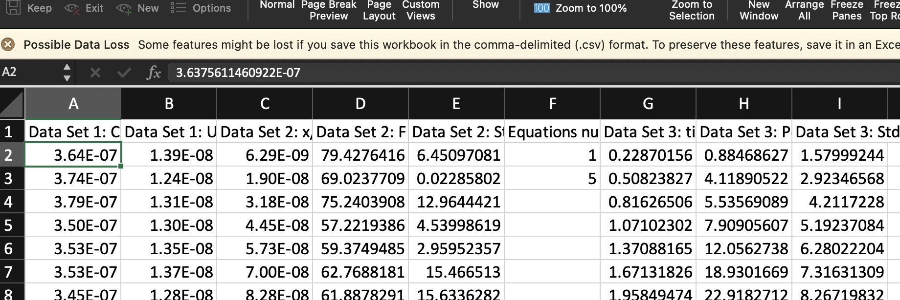

import pandas as pd
%config InlineBackend.figure_format = 'retina'
Why you should not open any of these data files in Excel#
If you’ve followed the instructions on the schedule page, you should have downloaded the files and saved them in the data folder.
By now you have heard me say many, many times “Do not open any of these files in Excel”. As discussed in previous sessions, Excel can mess up your data. But what do I mean by that?
You don’t need to run the any of the code in the following cells or download anything - this is just an example to show you the problem.
I have a data file called excel_is_bad.csv. I have not opened this file in Excel (yet…). First I’ll read in the file with pd.read_csv() and have a look at the data:
df = pd.read_csv('./data/excel_is_bad.csv')
df
| Data Set 1: Current / A | Data Set 1: Uncertainty / A | Data Set 2: x/ m | Data Set 2: F / N | Data Set 2: Std F / N | Equations numbers | Data Set 3: time / s | Data Set 3: Position / m | Data Set 3: Std of position / m | |
|---|---|---|---|---|---|---|---|---|---|
| 0 | 3.637561e-07 | 1.390798e-08 | 6.291381e-09 | 79.427642 | 6.450971 | 1.0 | 0.228702 | 0.884686 | 1.579992 |
| 1 | 3.744954e-07 | 1.241800e-08 | 1.903546e-08 | 69.023771 | 0.022858 | 5.0 | 0.508238 | 4.118905 | 2.923466 |
| 2 | 3.791332e-07 | 1.310137e-08 | 3.177954e-08 | 75.240391 | 12.964442 | NaN | 0.816265 | 5.535691 | 4.211723 |
| 3 | 3.499926e-07 | 1.296144e-08 | 4.452362e-08 | 57.221939 | 4.539986 | NaN | 1.071023 | 7.909056 | 5.192371 |
| 4 | 3.530267e-07 | 1.346878e-08 | 5.726770e-08 | 59.374949 | 2.959524 | NaN | 1.370882 | 12.056274 | 6.280222 |
| ... | ... | ... | ... | ... | ... | ... | ... | ... | ... |
| 9995 | 3.714713e-07 | 1.368284e-08 | NaN | NaN | NaN | NaN | NaN | NaN | NaN |
| 9996 | 3.579455e-07 | 1.299957e-08 | NaN | NaN | NaN | NaN | NaN | NaN | NaN |
| 9997 | 3.693864e-07 | 1.267630e-08 | NaN | NaN | NaN | NaN | NaN | NaN | NaN |
| 9998 | 3.619470e-07 | 1.423955e-08 | NaN | NaN | NaN | NaN | NaN | NaN | NaN |
| 9999 | 3.483875e-07 | 1.305634e-08 | NaN | NaN | NaN | NaN | NaN | NaN | NaN |
10000 rows × 9 columns
The file contains exactly what I expect.
Now I’m going to open this file in Excel. I’m not going to edit it in any way, I’m just going to open the file.
{kind=link}
When I open the file in Excel, it very helpfully auto-saves it. It’s just trying to be nice. BUT. If I now try to read the file in again, things will go wrong…
df1 = pd.read_csv('./data/excel_is_bad.csv')
df1
| Data Set 1: Current / A | Data Set 1: Uncertainty / A | Data Set 2: x/ m | Data Set 2: F / N | Data Set 2: Std F / N | Equations numbers | Data Set 3: time / s | Data Set 3: Position / m | Data Set 3: Std of position / m | |
|---|---|---|---|---|---|---|---|---|---|
| 0 | 3.640000e-07 | 1.390000e-08 | 6.290000e-09 | 79.427642 | 6.450971 | 1.0 | 0.228702 | 0.884686 | 1.579992 |
| 1 | 3.740000e-07 | 1.240000e-08 | 1.900000e-08 | 69.023771 | 0.022858 | 5.0 | 0.508238 | 4.118905 | 2.923466 |
| 2 | 3.790000e-07 | 1.310000e-08 | 3.180000e-08 | 75.240391 | 12.964442 | NaN | 0.816265 | 5.535691 | 4.211723 |
| 3 | 3.500000e-07 | 1.300000e-08 | 4.450000e-08 | 57.221939 | 4.539986 | NaN | 1.071023 | 7.909056 | 5.192371 |
| 4 | 3.530000e-07 | 1.350000e-08 | 5.730000e-08 | 59.374949 | 2.959524 | NaN | 1.370882 | 12.056274 | 6.280222 |
| ... | ... | ... | ... | ... | ... | ... | ... | ... | ... |
| 9995 | 3.710000e-07 | 1.370000e-08 | NaN | NaN | NaN | NaN | NaN | NaN | NaN |
| 9996 | 3.580000e-07 | 1.300000e-08 | NaN | NaN | NaN | NaN | NaN | NaN | NaN |
| 9997 | 3.690000e-07 | 1.270000e-08 | NaN | NaN | NaN | NaN | NaN | NaN | NaN |
| 9998 | 3.620000e-07 | 1.420000e-08 | NaN | NaN | NaN | NaN | NaN | NaN | NaN |
| 9999 | 3.480000e-07 | 1.310000e-08 | NaN | NaN | NaN | NaN | NaN | NaN | NaN |
10000 rows × 9 columns
Compare the values in the first row:
df["Data Set 1: Current / A"]
0 3.637561e-07
1 3.744954e-07
2 3.791332e-07
3 3.499926e-07
4 3.530267e-07
...
9995 3.714713e-07
9996 3.579455e-07
9997 3.693864e-07
9998 3.619470e-07
9999 3.483875e-07
Name: Data Set 1: Current / A, Length: 10000, dtype: float64
df1["Data Set 1: Current / A"]
0 3.640000e-07
1 3.740000e-07
2 3.790000e-07
3 3.500000e-07
4 3.530000e-07
...
9995 3.710000e-07
9996 3.580000e-07
9997 3.690000e-07
9998 3.620000e-07
9999 3.480000e-07
Name: Data Set 1: Current / A, Length: 10000, dtype: float64
They’re not the same! But I’ve just read in the same file!?
This is because when Excel autosaved the file it rounded the numbers. It didn’t tell me it was going to do that and I didn’t ask it to. This is a problem.
The way we solve this problem is to never open these files in Excel. When you’re taking data in the lab it is fine to write data into an Excel file and export that file as a csv file. But if you’ve been given data from another source, you should not be opening it in Excel.
Key Points#
If you have data from another source (e.g. data I give you, or that you download from somewhere) do not open the
csvfile in Excel.If you want to take a quick look at the data open the file in a text editor, or from the Jupyter home page.